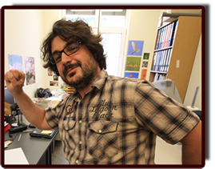
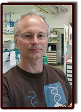
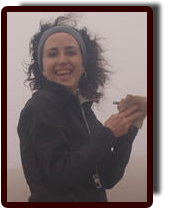

Contact
Project
People
News
Project
People
News
Researchers involved in the project
Dr. Fernando Fernández Mendoza
Associate Prof. Mag. Dr. Martin Grube
Associate Prof. Mag. Dr. Helmut Mayrhofer
Dr. Ester Gaya
Dr. Fernando Fernández Mendoza
Associate Prof. Mag. Dr. Martin Grube
Associate Prof. Mag. Dr. Helmut Mayrhofer
Dr. Ester Gaya